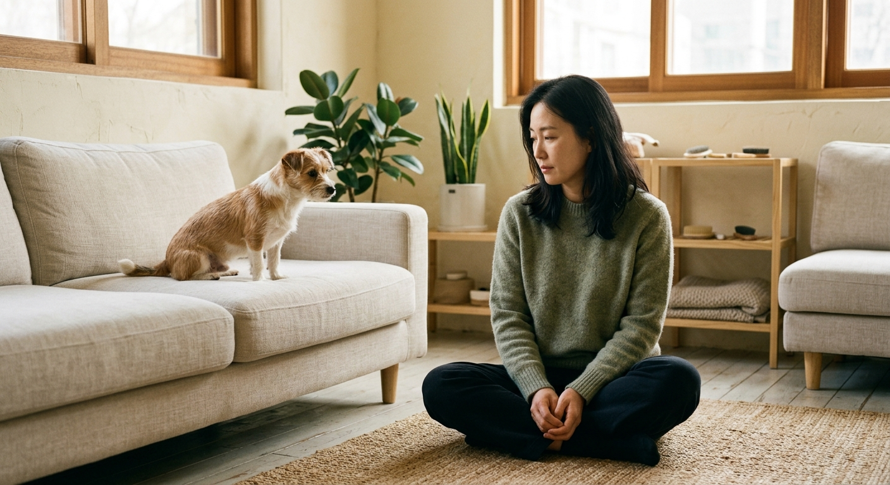
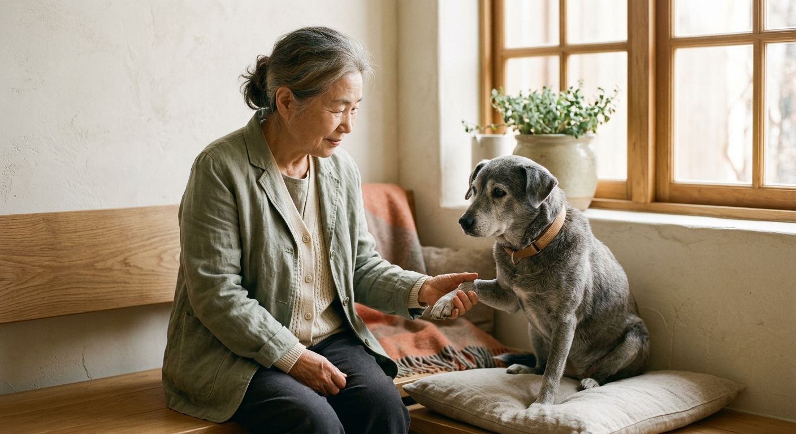
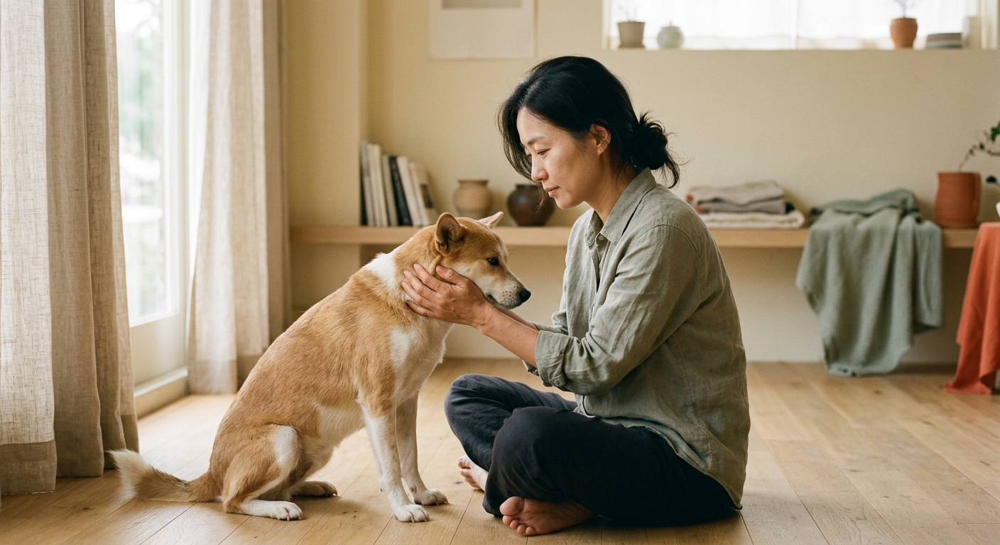
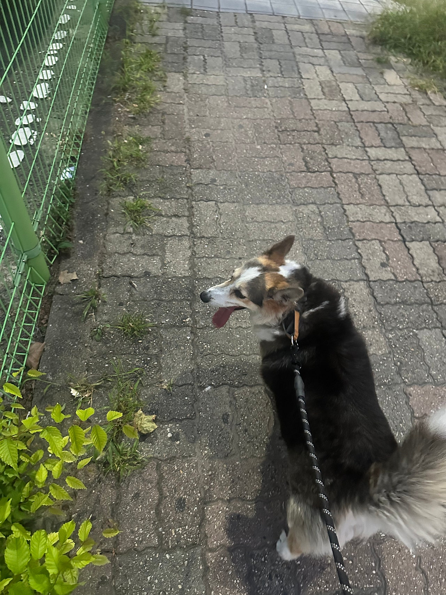
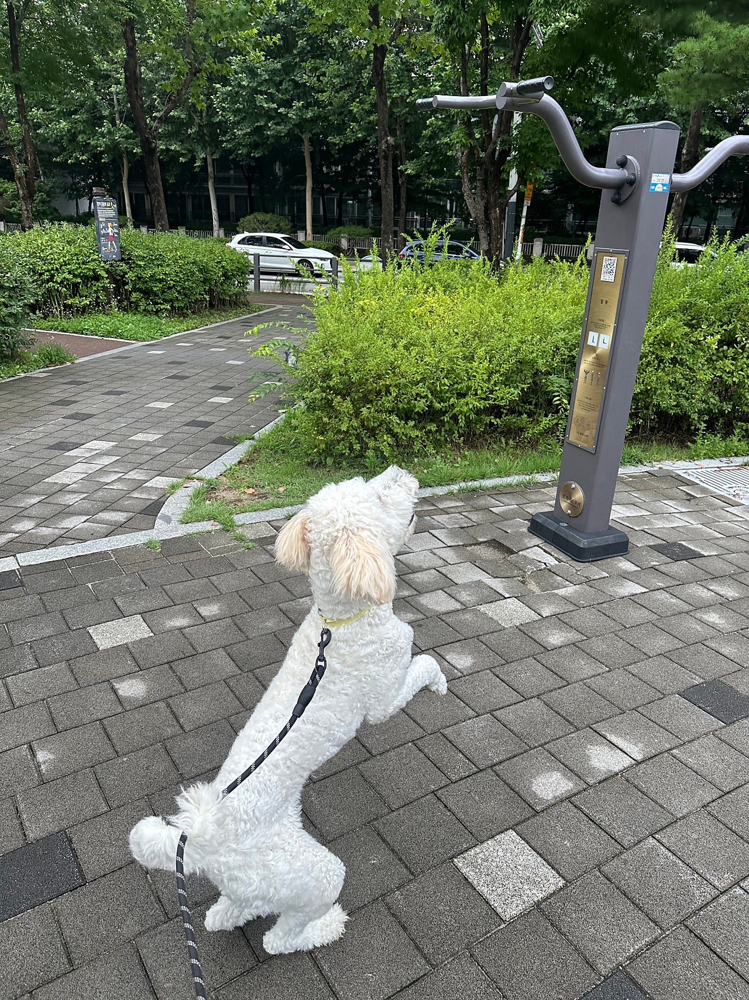
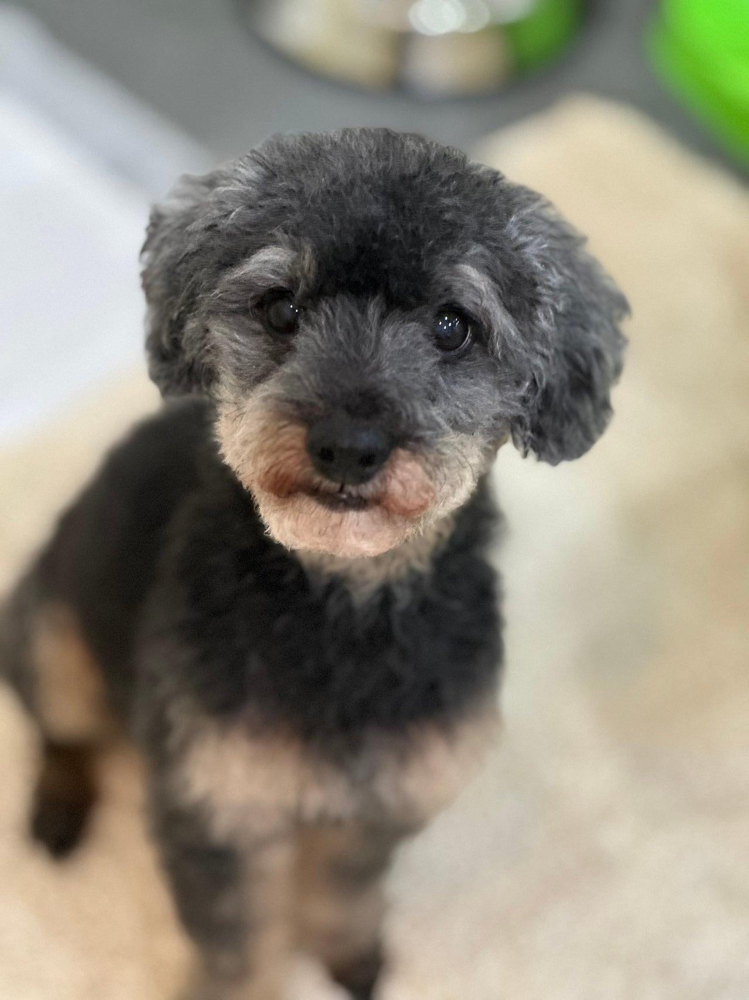
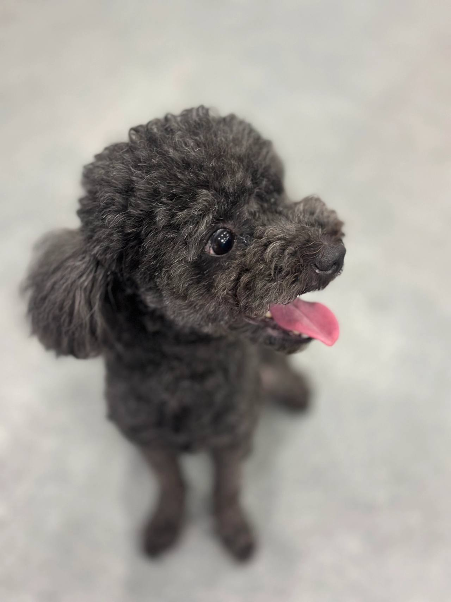
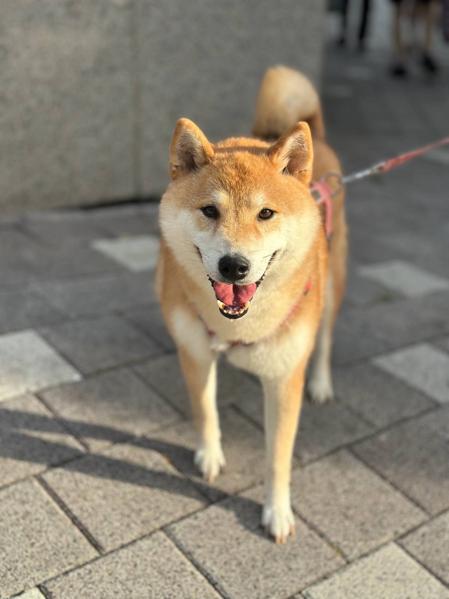

임신, 출산
출산 전후로돌보기 어렵거나아기와 함께 두기불안할 때
사천에서 사천강아지파양 관련 정보를 찾으셨다면 먼저 맡길 수 있는 정원을 확인하셔야 합니다. 러브몽은 아이의 안전을 최우선으로 고려하며 전국 전화 상담으로 안내를 시작합니다.
LOVE MONG SHELTER
오늘도,
한 아이를
기다립니다.
품종, 나이, 성격과 사진을 보고, 마음에 드는 아이를 가족으로 맞이해 주세요. 전화로 이야기 나눈 뒤 보호소에서 직접 만나봅니다.
REHOMING
새로운 가족을찾아 주는 일은아이에게 줄 수 있는마지막 선물입니다.
출산 전후로돌보기 어렵거나아기와 함께 두기불안할 때

함께 살다동물 알러지가 나타나생활이 어려워졌을 때

해외로 데려갈 수 없거나이사한 집에서함께하기 어려울 때군 입대와 오랜 부재도같은 경우에 가깝습니다.

보호자가 아프거나연로해졌을 때아이도 나이가 들어집에서 돌보기 어려울 때
상담부터 입양 공고까지, 순서는 같습니다.

나이, 지역, 질병 유무.지금 처한 상황을 먼저 듣습니다.지낼 공간이 있어야입소 여부가 정해집니다.

센터에 직접 오시거나담당자가 아이를 모시러 갑니다.전국 어디든픽업 비용은 받지 않습니다.

비용과 동의 사항을 안내하고확인한 뒤에 동의서를 작성합니다.금액은 아이 상태에 따라상담에서 안내합니다.

건강 상태와소형견, 대형견, 노령견을 보고아이가 지낼 센터를 정합니다.

입소 뒤에는사진과 동영상을 남깁니다.새 가족이 아이를알아보기 위한 준비입니다.

입양 공고로아이의 이야기를 전합니다.그 공고를 보고새로운 가족이 만나게 됩니다.
서로의 생활이 맞는지 천천히 확인합니다.
전화로 아이의 성격, 건강, 현재 생활을 먼저 들려드려요.
보호소 방문은 예약제로 진행합니다. 아이와 시간을 보내며 서로를 살펴요.
임시 보호 기간을 거쳐 입양을 확정합니다. 이후에도 적응을 함께 살펴요.
산책하고, 밥 먹고, 미용하는 보호소의 하루입니다. 사진을 누르면 그 이야기를 볼 수 있어요.






안내
대표 0505-707-0401를 통해 강아지의 나이와 건강 상태, 현재 사정을 자세히 듣고 수용 자리가 있는지 확인합니다. 입소 정원이 초과되어 자리가 없으면 안전을 위해 맡기실 수 없으니 사천강아지파양 상담 시 참고하시기 바랍니다.
보호소로 들어오는 사천강아지파양 절차 이후에는 정기적인 사진 기록과 입양 공고 등록이 체계적으로 이어집니다. 아이들이 머무는 동안 스트레스를 받지 않도록 돌보며 따뜻한 가족을 찾아주는 데 힘씁니다.
화면에 보이는 일상 사진과 소식은 실제 아이들의 기록이며 러브몽 사천강아지파양 안내의 바탕이 됩니다. 더 상세한 사항은 지역에 구애받지 않고 공용 0505-707-0401 상담으로 바로 이어집니다.
사천강아지파양 상담 전화는 무엇인가요?입소 상담 전화는 0505-707-0401입니다. 사천이라고 해서 바로 맡길 수 있는 것은 아니고, 자리와 아이 상태를 먼저 확인합니다.
사천에 따로 적힌 보호소 주소가 있나요?사천강아지파양 페이지는 사천 상담 안내입니다. 이 글에 없는 주소를 그 지역 지점이라고 안내하지 않습니다.
전화하면 바로 진행되나요?자리가 없거나 생활이 맞지 않으면 바로 진행되지 않습니다. 전화로 확인한 뒤 만남을 정합니다.



CONTACT
입양과 입소, 전국 어디서든 전화로 상담합니다.
전국 입소문의